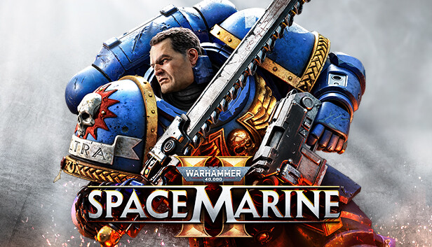
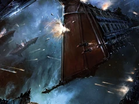

<!Doctype html>
<html lang="en">
    <head>
        <title>Main</title>
        <meta charset="UTF-8">
        <link rel="stylesheet" href="./src/style.css">
    </head>
</html>
<body>
    <header>
        <nav class="navbar">
            <div>
                
            </div>
            <ul>
                <li><a href="#">Home</a></li>
                <li><a href="video.html">Video</a></li>
                <li><a href="music.html">Music</a></li>
                <li><a href="book.html">Book</a></li>
                <li class="work"><a href="#">Work &bigtriangledown;</a>
                    <ul>
                        <li><a href="form.html">Form</a></li>
                        <li><a href="math.html">Math</a></li>
                        <li><a href="api.html">API</a></li>
                    </ul>
                </li>
            </ul>
            <a href="https://ku.edu.kz" class="entry">Entry</a> 
            <div>
                <div class="burger" id="burger2">
                    <span></span>
                    <span></span>
                    <span></span>
                </div>
            </div>
        </nav>
    </header>
    <content>
        <div class="container">
            <div class="content1">
            <p>Name:Tit</p>
            <p>Age:200+year</p>
            <p>Rank:Leftenaunt</p>    
            </div>
            
        </div>
        <div class="container">
            
            <div class="content1">
                <p>Деметрий Тит «Ничего из того, что ты скажешь, не собьёт меня с пути чести и не помешает отомстить за боевых братьев»
                – Капитан Тит отвергает предложение Немерота присоединиться к силам Хаоса во время освобождения Грайи (Warhammer 40,000: Space Marine)
                Деметрий Тит (англ. Demetrian Titus) — в настоящее время лейтенант космодесантников-примарис 2-й роты ордена Ультрамаринов. В прошлом капитан 2-й роты.</p>
            </div>
        </div>
        <div class="container">
            <div class="content1">
                <p>По задумке авторов в образе легиона Ультрамаринов и одноимённого ордена воплощены черты древнеримского общества и используются характерные для античности 
                    имена. Соответственно, ради сохранения культурных отсылок при переводе следует придерживаться установленных в русском языке правил передачи римских имён. 
                    Так, например, у имён, кончающихся на -us, окончание всегда отбрасывают, у кончающихся на -ius окончание передаётся как -ий, а имена 3-го склонения всегда 
                    передаются основой, которая определяется по форме родительного падежа (Cato, G. Catonis — Катон, Cicero, Ciceronis — Цицерон) и т.д. Тем не менее везде 
                    есть исключения, связанные с неблагозвучностью в принимающем языке (Торс — туловище), смысловой нагрузкой (Markus — немецкая форма римского Marcus), 
                    возникающими неуместными ассоциациями (Кассим — распространённое арабское имя) или другими причинами.
                </p>
            </div>
            
        </div>
    </content>
    <footer class="col-12">
        <div class="col-10 align-item-center">
            <a href="">
                
            </a>
            <a href="" class="col-2">
                
            </a>
            <a href="" >
                
            </a>
        </div>
    </footer>
    <script src="./js/script.js"></script>
</body>
</html>